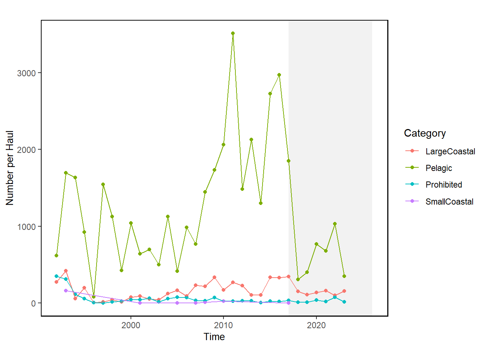
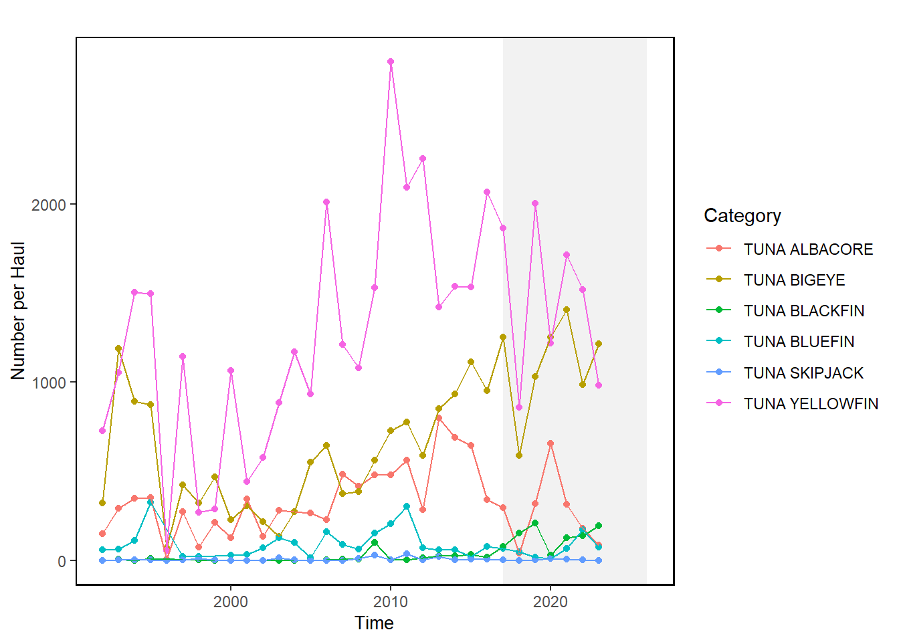

28 Atlantic Highly Migratory Species Pelagic Observer Program CPUE
Description: CPUE from pelagic observer program (POP) observed hauls, presented as number of fish per haul, by year and species from 1992-2024.
Indicator family:
Contributor(s): Tobey Curtis, Daniel Daye, Jennifer Cudney
Affiliations: HMS
28.1 Introduction to Indicator
The Pelagic Observer Program (POP) is operated out of the Southeast Fisheries Science Center, but provides observers in all regions (including the high seas) where U.S. flagged and HMS-permitted vessels fish under regulations for the HMS pelagic longline fishery. Data from the POP is collected during trips on pelagic longline vessels that are generally targeting swordfish, and yellowfin and bigeye tunas. Once a set is retrieved, information like the length, dressed weight, sex, and tag number of each individual fish is recorded by trained observers. Between 2018 and 2022, observer coverage for the entire pelagic longline fleet (i.e., from Maine to Texas, and the U.S. Caribbean and high seas) ranged from 9 to 13 percent of total overall reported sets.
28.2 Key Results and Visualizations
POP CPUE data are reported by pelagic observer program for reporting areas (See supporting map “POPAreas_600dpi.jpeg”), of which the Mid-Atlantic Bight (MAB) and Northeast Central (NEC) overlap with the area of interest for this report. Data from these two regions are combined and displayed in graphs depicting observed CPUE for sharks (by management category), tunas (by species), and swordfish/billfish (by species).
Updates from previous year: An additional year of data (2024) has been added. Blackfin tuna is not managed under the HMS FMP and has been removed from this year’s analyses. The supplied graphs also correct the y-axis titles and only display CPUE data. Dusky and Oceanic Whitetip shark were previously listed as being part of the “Pelagic” management group - this is incorrect and they have been reclassified as part of the “Prohibited” shark group.




28.3 Indicator statistics
Spatial scale: Northeast region (shelf + high seas). Data contributions cover both the Northeast Coastal (NEC) and Mid-Atlantic Bight (MAB) pelagic longline reporting areas. Data for the two areas are combined.
Temporal scale: Annually; data spans from 1992-2024
Synthesis Theme:
28.4 Implications
Pelagic observer data summarizes catch per unit effort information for a subset of total pelagic longline effort in the U.S. EEZ, and should not be interpreted as a census of total interactions for the northeast region pelagic longline fleet. CPUE trends can be used to evaluate whether the observed catch rate has changed through time. We do not recommend using count data to depict changes through time, as this is not a census of total interactions with the pelagic longline fleet and would likely underestimate pelagic longline interactions occurring in the region.
28.5 Get the data
Point of contact: Jennifer Cudney (jennifer.cudney@noaa.gov)
ecodata name: ecodata::hms_cpue
Variable definitions
- Year: year in which observations were made.
- CPUE per species or management group; total # fish caught / total # hauls; Includes Large Coastal Shark, Small Coastal Shark, Pelagic Shark, Prohibited Shark, Blue Marlin (BUM), Swordfish (SWO), White Marlin (WHM), Sailfish (SAI), Albacore Tuna (ALB), Skipjack Tuna (SKJ), Bigeye Tuna (BET), Bluefin Tuna (BFT), and Yellowfin Tuna (YFT).
Indicator Category:
28.7 Accessibility and Constraints
Pelagic observer data is considered confidential data, and must be screened to ensure that data meet requirements for “rule of three” at the set and vessel level before they can be distributed. For more information regarding the dataset please see the SEFSC POP InPort catalog entry. For data requests contact popobserver@noaa.gov
tech-doc link https://noaa-edab.github.io/tech-doc/hms_cpue.html